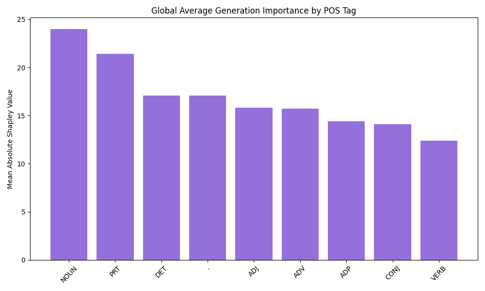
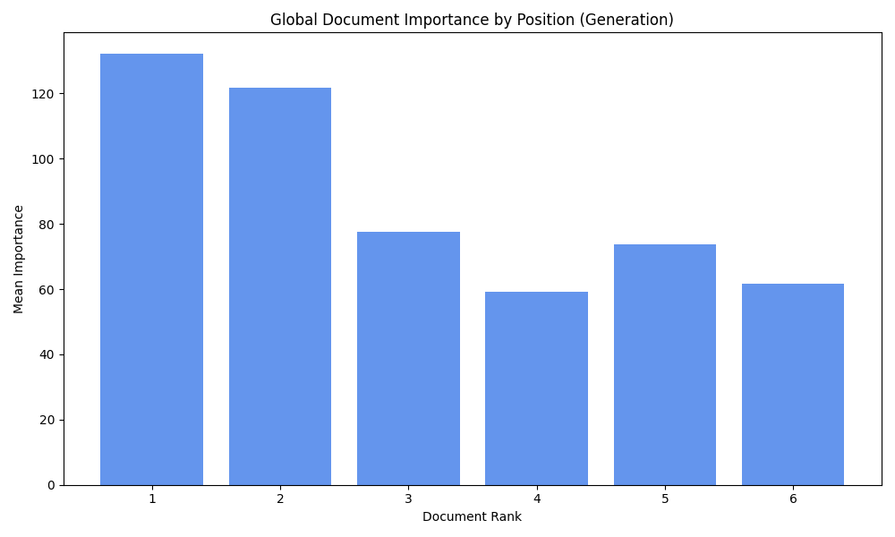
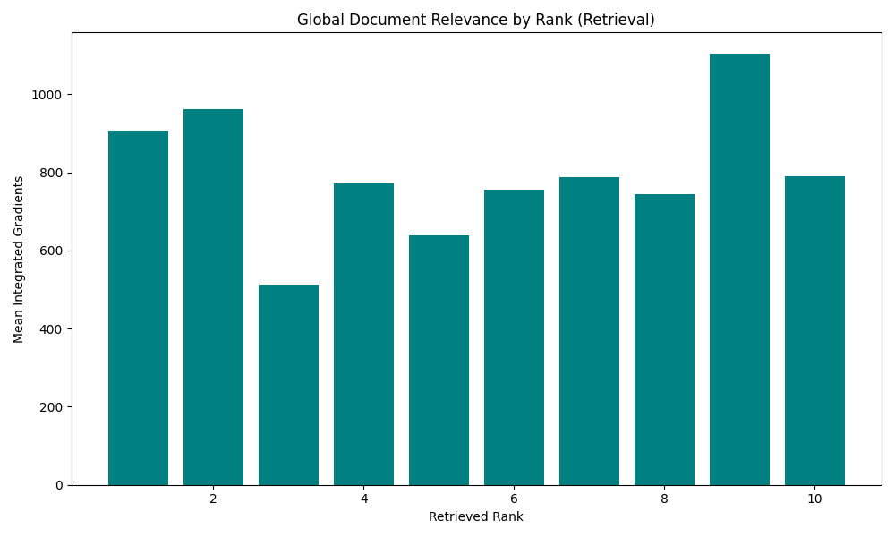

Generated on 2025-11-24 13:01:15.732601
Total Files Processed: 6
Aggregated statistics across all processed queries.



Click on a file ID to inspect detailed local plots.
| File ID | Type | Status |
|---|---|---|
| Llama-3.1-8B-Instruct_qid_1 | generation | [OK] Processed |
| Llama-3.1-8B-Instruct_qid_0 | generation | [OK] Processed |
| Llama-3.1-8B-Instruct_qid_31_2 | generation | [OK] Processed |
| Llama-3.1-8B-Instruct_qid_31_1 | generation | [OK] Processed |
| query_31_1 | retrieval | [OK] Processed |
| query_31_2 | retrieval | [OK] Processed |